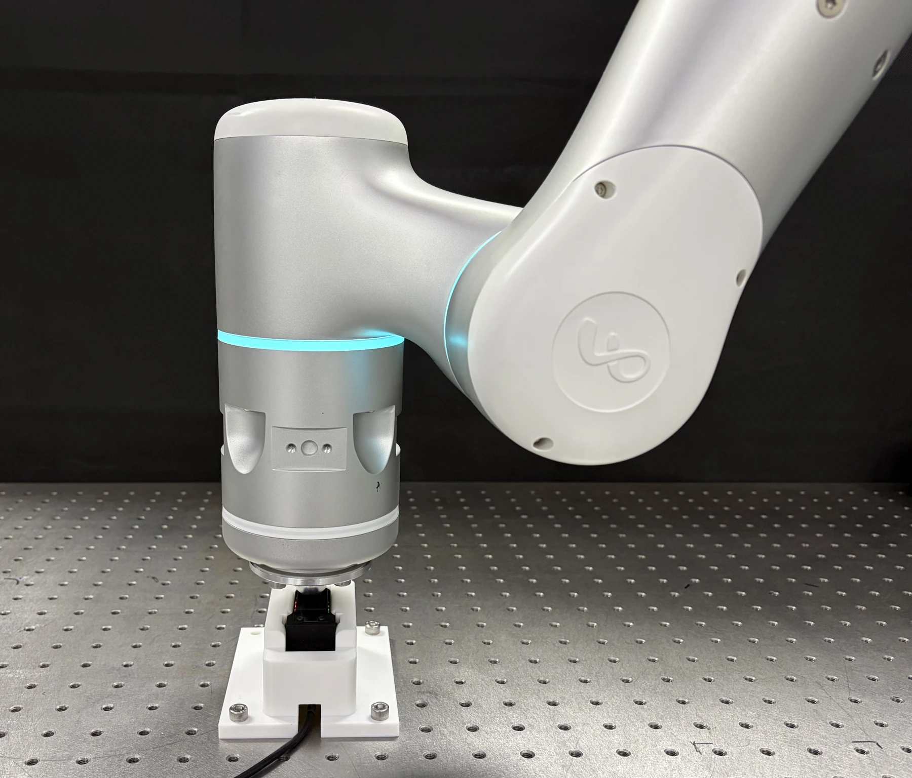
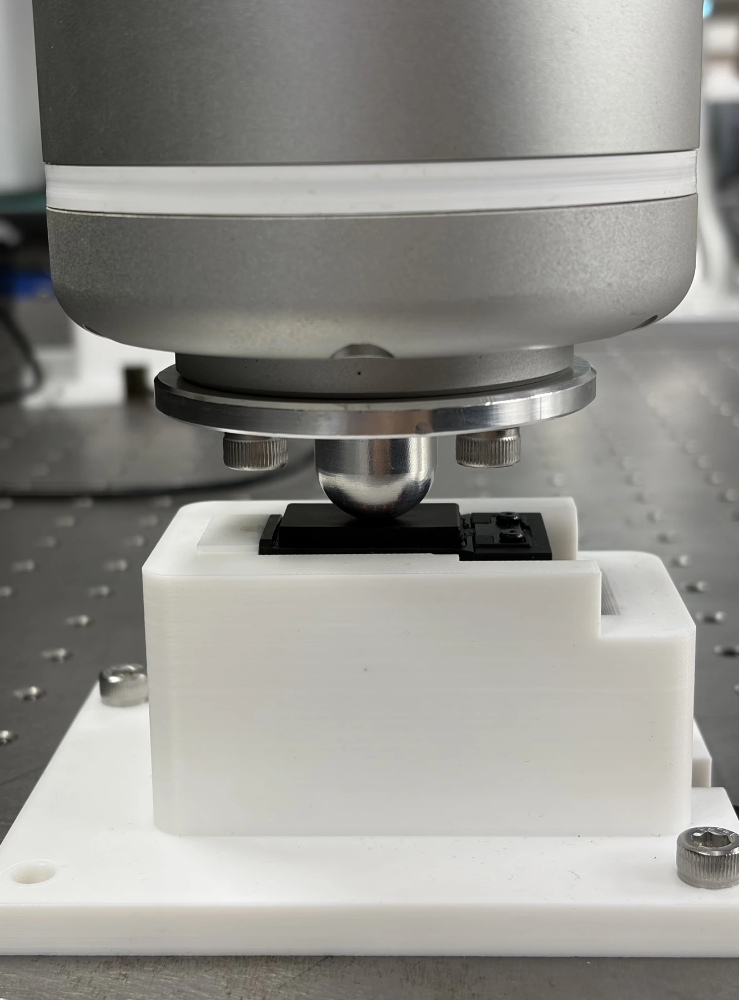
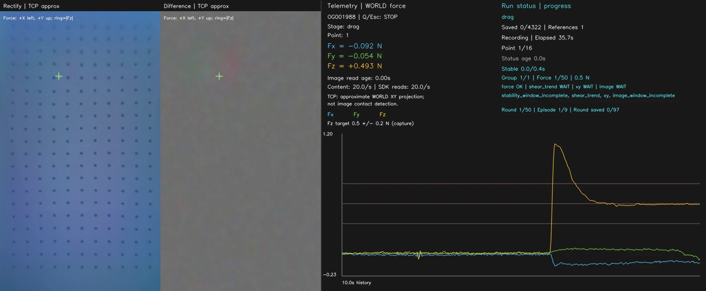

（点击放大）(Click to enlarge)
视触觉数据采集与三轴力估计Visuotactile data acquisition and three-axis force estimation
围绕视触觉传感器的接触力感知，搭建机械臂自动化采集平台，完成三轴力估计模型的训练与实时部署，并构建基于形变网格的触觉图像渲染流程。This project combines automated robotic data acquisition, training and real-time deployment of a three-axis contact force estimator, and tactile image rendering from simulated deformation meshes.
机械臂自动化采集Automated robotic data acquisition
基于 Flexiv 机械臂实现定深按压、定力加载、双向旋转及多方向剪切，支持不同接触位置、载荷和运动路径的重复采集。采集流程包含力矩清零、无接触参考图像获取、到位停稳采样及中断续采。The Flexiv-based acquisition platform supports depth-controlled indentation, force-controlled loading, bidirectional rotation and multidirectional shear across contact locations and loading paths. The acquisition workflow includes torque zeroing, non-contact reference-image capture, sampling after settling and resumption of interrupted runs.
触觉图像与力数据整理Tactile image and force data preparation
关联保存触觉图像、六维力／力矩、工具中心点（TCP）位姿及加载参数。通过轨迹可视化核对采样位置，并将触觉图像与对应的三轴力读数整理为模型训练样本。Tactile images are stored with six-axis force/torque measurements, tool centre point (TCP) poses and loading parameters. Trajectory visualisation supports inspection of sampling locations. The tactile images are paired with the corresponding three-axis force readings to form training samples for the force estimator.
三轴力估计与实时部署Three-axis force estimation and real-time deployment
实现基于 MAE ViT 编码器与双头潜变量结构的力估计模型，完成数据适配、分阶段训练及离线评估。模型部署于采集平台，根据触觉图像实时预测三轴接触力，并在按压与剪切实验中对照机械臂反馈的力读数，分析各分量随加载过程变化的预测误差。A force estimator with a masked autoencoder (MAE)–based Vision Transformer (ViT) encoder and a dual-head latent architecture was implemented, trained in stages and evaluated offline. Deployed on the acquisition platform, it predicts three-axis contact forces from tactile images in real time. Indentation and shear experiments compare these predictions with force readings reported by the robot to analyse component-wise errors throughout loading.
触觉仿真图像生成Rendering simulated tactile images
基于 Blender 搭建形变网格到触觉图像的批量渲染流程，完成接触表面提取、材质配置及参考表面 UV 坐标传递。不同形变状态使用一致的纹理映射，支持单样本预览与并行批量渲染。A Blender pipeline converts simulated deformation meshes into tactile images through contact-surface extraction, material assignment and UV transfer from a reference surface. Consistent texture mapping across deformation states supports single-sample previews and parallel batch rendering.